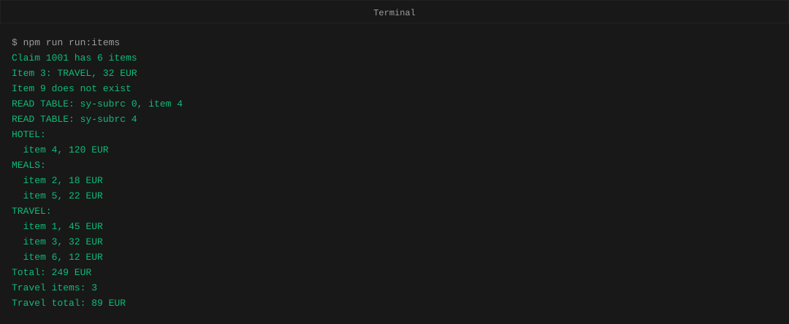
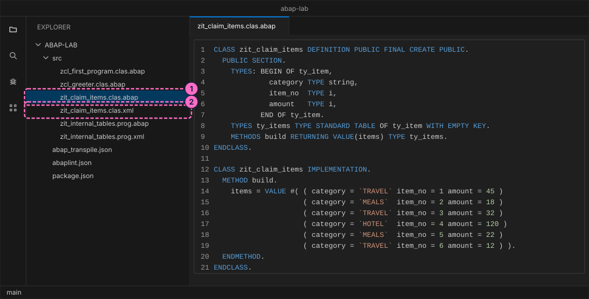
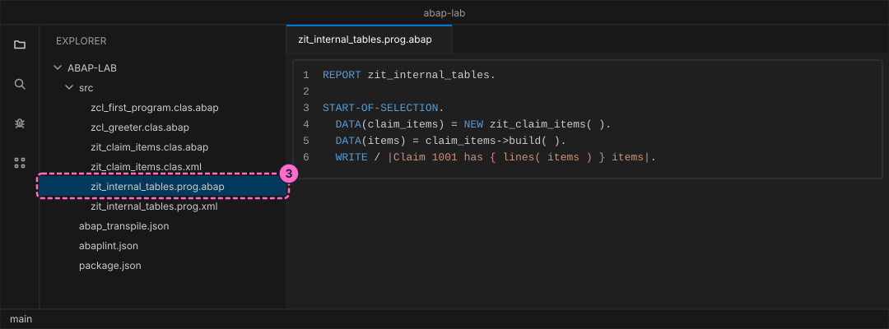
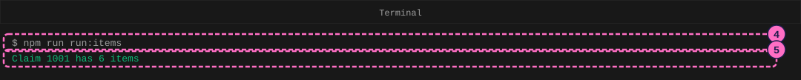
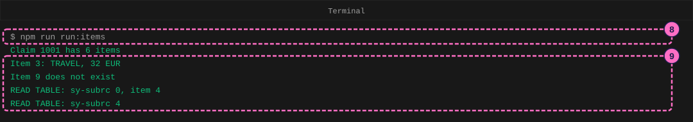
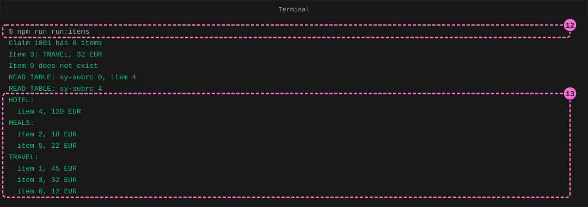
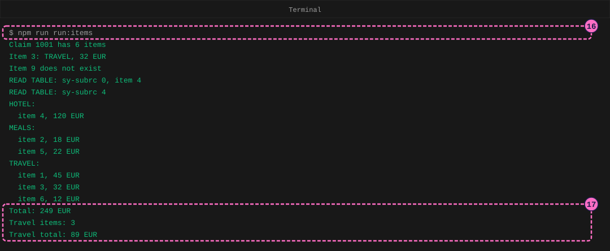
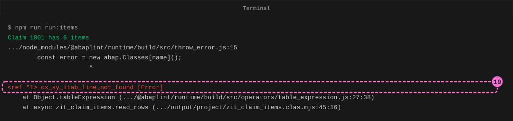

ABAP Guide: Work with Internal Tables
|
This content was generated with the assistance of AI and should be verified against the official documentation before being relied on in production. |
Checked on 2026-11-13 against open-abap 2.14.30 (the abaplint transpiler and runtime, with open-abap-core commit a9acc41) and Node.js 24.21.
What you build
You write a class named zit_claim_items that holds the six items of one expense claim in an internal table, an
internal table being a list of rows that lives only while the program runs. Four methods work on that list. build
fills it with the VALUE expression, read_rows reads single rows in three ways, list_by_category sorts the table and
prints the items under a heading per category, and total_and_filter adds up the amounts with REDUCE and keeps only
the travel items with FILTER. A report named zit_internal_tables creates the class and calls the methods, and you
run it on Node.js after every phase. At the end you ask for a row that does not exist and read the error that follows.
The playground is open-abap, a community open-source project, not SAP software. It runs only the part of the ABAP
language that it implements, so a program that works here needs a check on a real SAP system before you rely on it
there. The lab’s items are simpler than the real claim items of an SAP system: a category, an item number and a whole
euro amount. The statement LOOP AT ... GROUP BY and the statement COLLECT do not run in the playground and are not
used; they are explained on Internal Tables: Processing and Grouping.

Before you start
-
No account is needed: Node.js, the abaplint tools and open-abap install from the public npm registry without signing in. The licences you accept by installing (MIT for the abaplint packages) are listed in the README of the ABAP lab.
-
Set up the lab with Set Up a Local ABAP Playground and write the report of Your First ABAP Program once, so that you know the file layout (a
.abapfile and a.xmlfile per object) and the command that transpiles and runs a report. This guide adds files to thesrcfolder of the sameabap-labfolder. -
The lab already holds the finished files of this guide in
modules/ROOT/examples/abap-lab/src/. Type them yourself rather than copying them, so that you meet the errors in this guide on your own screen. -
Read Internal Tables for the three table kinds and for what a key is. Two pages go deeper than this guide does: Table Expressions and Keys and Constructor Expressions.
-
The figures are drawings of the editor and the terminal, not screenshots. A highlighted box with a number marks the file or the output of the step with the same number.
Steps
The class grows by one method in each phase. In every phase you add two pieces to the class: the METHODS line in the DEFINITION part, which announces the method, and the METHOD ... ENDMETHOD block in the IMPLEMENTATION part, which holds its code. Then you add one line to the report that calls the method.
Write the class and build the table
-
In the
srcfolder, create the filesrc/zit_claim_items.clas.abapwith the source below. The statementTYPES: BEGIN OF ty_item ... END OF ty_itemdescribes one row, a structure with three components.TYPES ty_items TYPE STANDARD TABLE OF ty_item WITH EMPTY KEYdescribes the whole table: a standard table, which keeps its rows in the order they were added, with no key, because this guide only loops over the rows and looks them up with conditions. The methodbuildhands the table back as its result. In it,VALUE #( ( ... ) ( ... ) )builds a table: every pair of inner parentheses is one row, and#means that the type of the result is taken from the receiving variableitems. The category stands first in the row, which matters in a later phase.CLASS zit_claim_items DEFINITION PUBLIC FINAL CREATE PUBLIC. PUBLIC SECTION. TYPES: BEGIN OF ty_item, category TYPE string, item_no TYPE i, amount TYPE i, END OF ty_item. TYPES ty_items TYPE STANDARD TABLE OF ty_item WITH EMPTY KEY. METHODS build RETURNING VALUE(items) TYPE ty_items. ENDCLASS. CLASS zit_claim_items IMPLEMENTATION. METHOD build. items = VALUE #( ( category = `TRAVEL` item_no = 1 amount = 45 ) ( category = `MEALS` item_no = 2 amount = 18 ) ( category = `TRAVEL` item_no = 3 amount = 32 ) ( category = `HOTEL` item_no = 4 amount = 120 ) ( category = `MEALS` item_no = 5 amount = 22 ) ( category = `TRAVEL` item_no = 6 amount = 12 ) ). ENDMETHOD. ENDCLASS. -
Create the attribute file
src/zit_claim_items.clas.xmlnext to it:<?xml version="1.0" encoding="utf-8"?> <abapGit version="v1.0.0" serializer="LCL_OBJECT_CLAS" serializer_version="v1.0.0"> <asx:abap xmlns:asx="http://www.sap.com/abapxml" version="1.0"> <asx:values> <VSEOCLASS> <CLSNAME>ZIT_CLAIM_ITEMS</CLSNAME> <LANGU>E</LANGU> <DESCRIPT>Claim items</DESCRIPT> <STATE>1</STATE> <FIXPT>X</FIXPT> <UNICODE>X</UNICODE> </VSEOCLASS> </asx:values> </asx:abap> </abapGit>
-
Create
src/zit_internal_tables.prog.abapand its attribute filesrc/zit_internal_tables.prog.xml. The report creates the object, callsbuild, and writes how many rows the table has.lines( items )is a built-in function that returns the number of rows.REPORT zit_internal_tables. START-OF-SELECTION. DATA(claim_items) = NEW zit_claim_items( ). DATA(items) = claim_items->build( ). WRITE / |Claim 1001 has { lines( items ) } items|.<?xml version="1.0" encoding="utf-8"?> <abapGit version="v1.0.0" serializer="LCL_OBJECT_PROG" serializer_version="v1.0.0"> <asx:abap xmlns:asx="http://www.sap.com/abapxml" version="1.0"> <asx:values> <PROGDIR> <NAME>ZIT_INTERNAL_TABLES</NAME> <SUBC>1</SUBC> <RLOAD>E</RLOAD> <UCCHECK>X</UCCHECK> </PROGDIR> </asx:values> </asx:abap> </abapGit>
-
In the terminal, in the
abap-labfolder, run the command that transpiles the sources and runs the report. Add this line to thescriptsofpackage.jsonfirst, next torun:first:"run:items": "npm run transpile && node output/project/zit_internal_tables.prog.mjs". Because the command joins the two with&&, Node.js runs only when the transpile succeeded.npm run run:items -
Read the output. The transpiler prints a few lines about the files it found, and the last line comes from your report: the table holds six rows. The figure leaves out the transpiler lines.

Read rows
A program often needs one row of a table, for example the item with number 3. ABAP has two ways to read one row: a table expression, which is the name of the table followed by a condition in square brackets, and the statement READ TABLE.
-
In
src/zit_claim_items.clas.abap, add the line that declares the method to theDEFINITIONpart, below the declaration ofbuild, and the method itself to theIMPLEMENTATIONpart, belowbuild. In the method,items[ item_no = 3 ]is a table expression: it stands for the first row whoseitem_nois 3, andDATA(third)declares a variable that receives that row.line_exists( items[ item_no = 9 ] )is true or false, so nothing fails when the row is missing.READ TABLE ... WITH KEYcopies a row into a variable and reports the result insy-subrc: 0 when a row was found and 4 when it was not.METHODS read_rows IMPORTING items TYPE ty_items.METHOD read_rows. DATA(third) = items[ item_no = 3 ]. WRITE / |Item 3: { third-category }, { third-amount } EUR|. IF line_exists( items[ item_no = 9 ] ). WRITE / `Item 9 exists`. ELSE. WRITE / `Item 9 does not exist`. ENDIF. READ TABLE items INTO DATA(found) WITH KEY category = `HOTEL`. WRITE / |READ TABLE: sy-subrc { sy-subrc }, item { found-item_no }|. READ TABLE items INTO found WITH KEY category = `FLIGHT`. WRITE / |READ TABLE: sy-subrc { sy-subrc }|. ENDMETHOD. -
In
src/zit_internal_tables.prog.abap, add the call at the end of the report:claim_items->read_rows( items ). -
Run
npm run run:itemsagain. -
Read the four new lines.
Item 3: TRAVEL, 32 EURcomes from the table expression.Item 9 does not existcomes fromline_exists. The firstREAD TABLElooks for the categoryHOTEL, finds item 4 and setssy-subrcto 0. The second looks forFLIGHT, finds nothing and setssy-subrcto 4.
Sort and list by category
The items are in the order they were entered, and the categories are mixed. To print the items under one heading per category, sort the table by category first, then use a control-level statement inside a loop.
-
Add the declaration of
list_by_categoryand the method.DATA(sorted) = itemscopies the table, so that the original keeps its order.SORT sorted BY category item_noputs the rows in ascending order of category and, within a category, of item number.LOOP AT sorted INTO DATA(item)runs the block once per row.AT NEW categoryruns its block when the value ofcategorydiffers from the row before, so it runs once per category and prints the heading. The statement compares the named column and every column to its left, which is whycategoryis the first component ofty_item.METHODS list_by_category IMPORTING items TYPE ty_items.METHOD list_by_category. DATA(sorted) = items. SORT sorted BY category item_no. LOOP AT sorted INTO DATA(item). AT NEW category. WRITE / |{ item-category }:|. ENDAT. WRITE / | item { item-item_no }, { item-amount } EUR|. ENDLOOP. ENDMETHOD. -
Add the call to the end of the report:
claim_items->list_by_category( items ). -
Run
npm run run:itemsagain. -
Read the nine new lines. The categories come out in alphabetical order, HOTEL, MEALS and TRAVEL, and each heading appears once, followed by its items in item-number order. The reference page lists
AT NEWamong the older language elements: new code usually groups withLOOP AT ... GROUP BY, which needs a real ABAP system and is not run here.
Total and filter
-
Add the declaration of
total_and_filterand the method.REDUCEreduces a table to one value:INITgives the start value ofsum,FOR item IN itemsrepeats over the rows,NEXTsays what happens on every row, and the result is the finalsum, of typei.FILTERwith aWHEREcondition oncategorybuilds a new table with only the matching rows.FILTERneeds a table with a sorted or hashed key on the compared column, so the method first copies the items intoby_category, a sorted table with the non-unique keycategory. A secondREDUCEover the filtered table adds up the travel items.METHODS total_and_filter IMPORTING items TYPE ty_items.METHOD total_and_filter. DATA(total) = REDUCE i( INIT sum = 0 FOR item IN items NEXT sum = sum + item-amount ). WRITE / |Total: { total } EUR|. DATA by_category TYPE SORTED TABLE OF ty_item WITH NON-UNIQUE KEY category. by_category = items. DATA(travel) = FILTER #( by_category WHERE category = `TRAVEL` ). WRITE / |Travel items: { lines( travel ) }|. DATA(travel_total) = REDUCE i( INIT sum = 0 FOR item IN travel NEXT sum = sum + item-amount ). WRITE / |Travel total: { travel_total } EUR|. ENDMETHOD. -
Add the call to the end of the report:
claim_items->total_and_filter( items ). -
Run
npm run run:itemsagain. -
Read the three new lines: the six items add up to 249 EUR (45 + 18 + 32 + 120 + 22 + 12), three of them are travel items, and the travel items add up to 89 EUR (45 + 32 + 12).

Read a row that is not there
A table expression stands for a row, so the row has to exist. You make that fail on purpose, in a place where you know the fix.
-
In
read_rows, change the first line of the method fromitems[ item_no = 3 ]toitems[ item_no = 9 ]. There is no item 9. Save the file. -
Run
npm run run:items. The report prints its first line, then the program stops: no row matches, so the table expression raises the exceptioncx_sy_itab_line_not_found, and nothing catches it. Node.js prints the exception as a stack trace. Read the lines that name your code:zit_claim_items.read_rowsis the method, and the number pair afterclas.mjsis the position in the generated JavaScript, not in your ABAP source. Node.js ends with exit code 1. The figure leaves out the unrelated lines of the trace and shortens the long paths with three dots.
-
Change
9back to3, save and runnpm run run:items. The 17 lines of output return.
Check the result
npm run run:items ends without an error and prints 17 lines: the count Claim 1001 has 6 items, the four lines of read_rows, the three headings with their six items, and the three lines Total: 249 EUR, Travel items: 3 and Travel total: 89 EUR. npm run lint prints abaplint: 0 issue(s) found, 14 file(s) analyzed and npm test still passes.
Variations
-
Catch the missing row instead of letting the program stop. Wrap the table expression for item 9 in
TRY.andCATCH cx_sy_itab_line_not_found.and write a line in theCATCHpart: the program then prints that line and goes on. -
Give a fallback instead of an exception:
VALUE ty_item( items[ item_no = 9 ] OPTIONAL )returns an empty row, soamountis 0 and the program goes on. -
Add a seventh item to
buildand run again to see the totals and the headings change. A new category such asFLIGHTgets its own heading, in alphabetical order. -
Read a row by position:
items[ 2 ]is the second row of the table in its current order.
What can go wrong
| Symptom | Cause | Fix |
|---|---|---|
|
The report calls a method name that the class does not have, here |
Open the file and line at the end of the message and correct the name. |
|
A table expression asked for a row that does not exist, and no |
Ask first with |
|
No row matches the |
Check the key value, for example the spelling and the case of the category, and test |
Where to go next
-
Previous guide: Data Types, Strings and String Templates.
-
Next in this section: Classes, Interfaces and Exceptions, which turns the exception you met in the last phase into something you catch and raise yourself.
-
Reference: Internal Tables.
-
Reference: Table Expressions and Keys.
-
Reference: Internal Tables: Processing and Grouping, where
LOOP AT ... GROUP BYis explained (it requires an SAP system; not run here). -
Reference: Constructor Expressions.